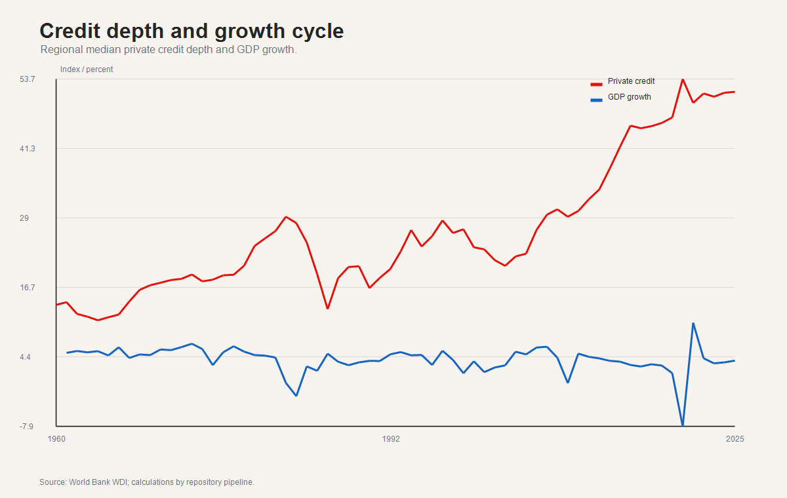
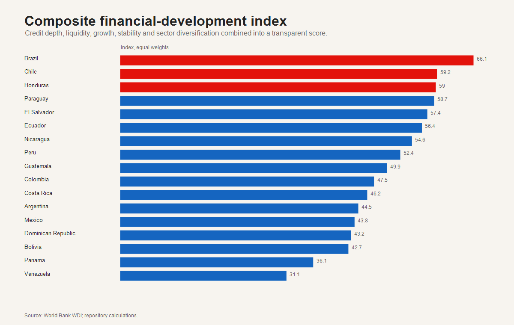
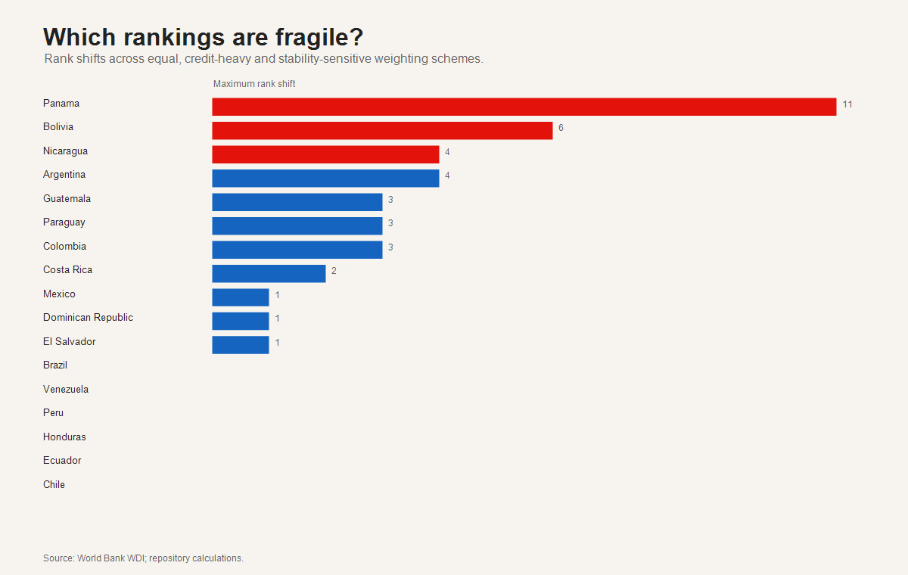
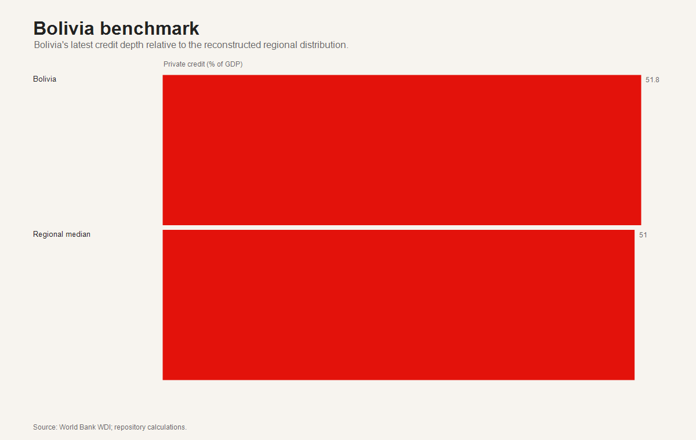
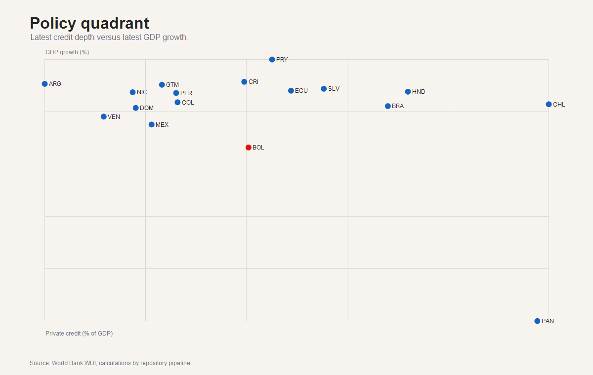

Research question
How do financial development, macroeconomic stability and productive structure differ across Latin America, and what do these differences imply for regional comparison, growth diagnostics and Bolivia-centered policy interpretation?
Macro-financial development analytics
Reproducible evidence on financial development, macroeconomic stability and economic growth across Latin America.
This repository reconstructs a comparable public-data panel, documents transparent limitations, and communicates PCA, clustering, composite-index sensitivity, panel-model diagnostics and policy-facing dashboard outputs.
Executive Summary
How do financial development, macroeconomic stability and productive structure differ across Latin America, and what do these differences imply for regional comparison, growth diagnostics and Bolivia-centered policy interpretation?
A public-data research compendium with reconstructed panels, financial-development indicators, distributional diagnostics, PCA, clustering, composite-index sensitivity, panel models, dashboard outputs and working-paper reporting.
Key Metrics
Key Findings
Dashboard

The existing dashboard is stored as dashboard/index.html, with source in dashboard/app.R. It should be interpreted as a macro-financial reporting dashboard, not as a new empirical result beyond the documented pipeline.
Main Figures

Existing figure on composite index ranking and measurement.

Existing figure showing financial-system profiles from PCA and clustering.

Existing sensitivity figure showing how rankings respond to index choices.

Existing figure placing Bolivia in the regional comparison.

Existing diagnostic figure for model associations.

Existing policy-facing figure for macro-financial interpretation.
Executive Tables
Data Sources
CreditType, EconomicSector and PanelCompleto data products.The repository explicitly records when original legacy disaggregations are unavailable. The project uses public reconstructed annual equivalents rather than fabricating missing monthly regulator panels.
Analytical Workflow
Reconstruct a comparable annual panel using official public sources.
Document coverage, missingness, recovery limits and quality-control outputs.
Compute financial-development indicators, country profiles and composite measures.
Apply distributional analysis, PCA, clustering, sensitivity checks and panel-model diagnostics.
Publish dashboard figures, executive tables, working paper, executive report and replication documentation.
Methodology
Comparable public-data panel reconstruction with explicit limitation notes.
Financial-development indicators, country profiles, composite indices and sensitivity checks.
Pooled and fixed-effects panel-model outputs interpreted as associations, not final causal estimates.
Reports
Public working-paper report.
PDF report file.
Executive report page.
PDF executive report.
Review note.
Quality-control report.
Recovery audit note.
Repository link map.
Reproducibility
powershell.exe -NoProfile -ExecutionPolicy Bypass -File .\src\reconstruct_public_data.ps1 -Root (Resolve-Path .).Path
powershell.exe -NoProfile -ExecutionPolicy Bypass -File .\src\final_quality_upgrade.ps1 -Root (Resolve-Path .).PathThese commands were not executed during this website update.
Limitations
CreditType.reconstructed and EconomicSector.reconstructed are official annual equivalents, not recovered historical disaggregations.Citation
Citation metadata are available in CITATION.cff.
Back to Portfolio
Applied Economist & Data Analyst.